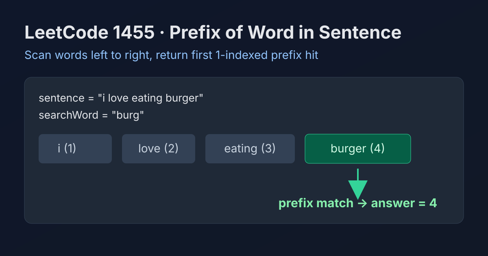

LeetCode 1455: Check If a Word Occurs As a Prefix of Any Word in a Sentence (Split + StartsWith Scan)
LeetCode 1455StringPrefix MatchToday we solve LeetCode 1455 - Check If a Word Occurs As a Prefix of Any Word in a Sentence.
Source: https://leetcode.com/problems/check-if-a-word-occurs-as-a-prefix-of-any-word-in-a-sentence/

English
Problem Summary
Given a sentence and a search word, return the 1-indexed position of the first word in the sentence that starts with the search word. If no such word exists, return -1.
Key Insight
The task asks for the first prefix match, so a left-to-right scan with early return is optimal and simple.
Algorithm
- Split sentence by spaces into words.
- Iterate from left to right.
- If current word starts with searchWord, return index + 1.
- If finished with no match, return -1.
Complexity Analysis
Let n be sentence length and m be searchWord length.
Time: O(n) overall scanning.
Space: O(n) for split words (language-dependent).
Common Pitfalls
- Returning 0-index instead of required 1-index.
- Using substring containment instead of prefix check.
- Forgetting to return -1 when no word matches.
Reference Implementations (Java / Go / C++ / Python / JavaScript)
class Solution {
public int isPrefixOfWord(String sentence, String searchWord) {
String[] words = sentence.split(" ");
for (int i = 0; i < words.length; i++) {
if (words[i].startsWith(searchWord)) {
return i + 1;
}
}
return -1;
}
}func isPrefixOfWord(sentence string, searchWord string) int {
words := strings.Split(sentence, " ")
for i, w := range words {
if strings.HasPrefix(w, searchWord) {
return i + 1
}
}
return -1
}class Solution {
public:
int isPrefixOfWord(string sentence, string searchWord) {
stringstream ss(sentence);
string word;
int idx = 1;
while (ss >> word) {
if (word.rfind(searchWord, 0) == 0) {
return idx;
}
idx++;
}
return -1;
}
};class Solution:
def isPrefixOfWord(self, sentence: str, searchWord: str) -> int:
for i, word in enumerate(sentence.split(), start=1):
if word.startswith(searchWord):
return i
return -1var isPrefixOfWord = function(sentence, searchWord) {
const words = sentence.split(' ');
for (let i = 0; i < words.length; i++) {
if (words[i].startsWith(searchWord)) {
return i + 1;
}
}
return -1;
};中文
题目概述
给定一个句子 sentence 和一个查询串 searchWord，返回第一个以前缀形式匹配 searchWord 的单词位置（下标从 1 开始）；如果不存在则返回 -1。
核心思路
题目只要第一个匹配位置，所以按单词从左到右扫描，一旦命中前缀就立刻返回。
算法步骤
- 按空格拆分句子得到单词数组。
- 依次遍历每个单词。
- 若该单词以前缀匹配 searchWord，返回当前位置（i + 1）。
- 遍历结束仍未匹配，返回 -1。
复杂度分析
设句子长度为 n，查询串长度为 m。
时间复杂度：O(n)。
空间复杂度：O(n)（拆分字符串的开销，视语言实现而定）。
常见陷阱
- 把答案当成 0 下标返回。
- 用“包含”判断替代“前缀”判断。
- 忘记无匹配时返回 -1。
多语言参考实现（Java / Go / C++ / Python / JavaScript）
class Solution {
public int isPrefixOfWord(String sentence, String searchWord) {
String[] words = sentence.split(" ");
for (int i = 0; i < words.length; i++) {
if (words[i].startsWith(searchWord)) {
return i + 1;
}
}
return -1;
}
}func isPrefixOfWord(sentence string, searchWord string) int {
words := strings.Split(sentence, " ")
for i, w := range words {
if strings.HasPrefix(w, searchWord) {
return i + 1
}
}
return -1
}class Solution {
public:
int isPrefixOfWord(string sentence, string searchWord) {
stringstream ss(sentence);
string word;
int idx = 1;
while (ss >> word) {
if (word.rfind(searchWord, 0) == 0) {
return idx;
}
idx++;
}
return -1;
}
};class Solution:
def isPrefixOfWord(self, sentence: str, searchWord: str) -> int:
for i, word in enumerate(sentence.split(), start=1):
if word.startswith(searchWord):
return i
return -1var isPrefixOfWord = function(sentence, searchWord) {
const words = sentence.split(' ');
for (let i = 0; i < words.length; i++) {
if (words[i].startsWith(searchWord)) {
return i + 1;
}
}
return -1;
};
Comments